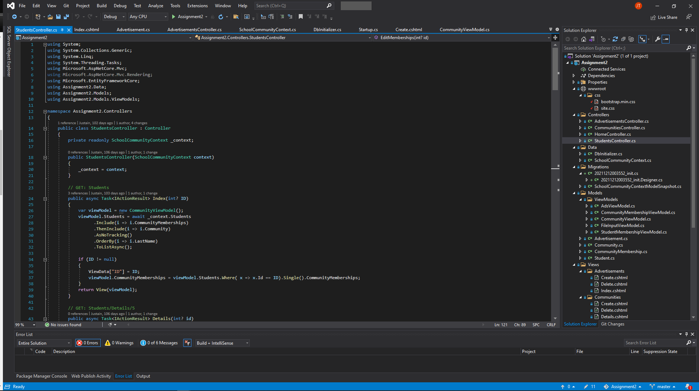
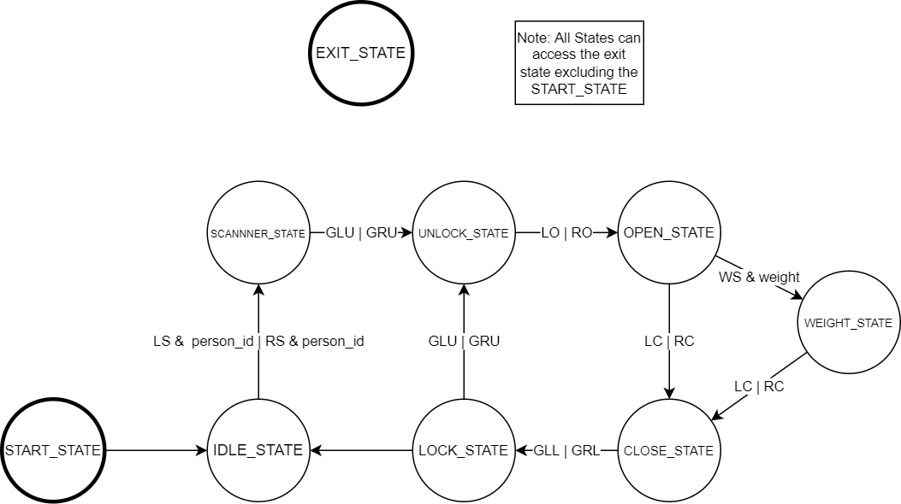
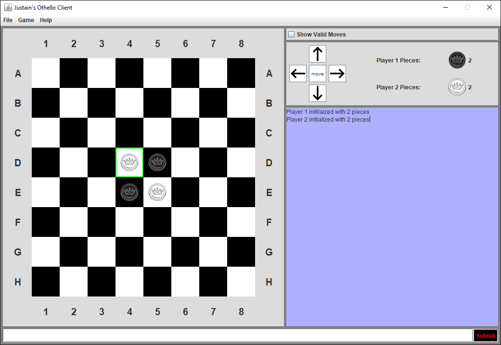
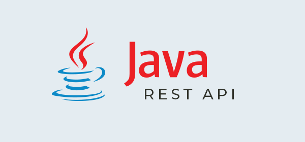

Created with the .NET framwork this is a backend focused project.
In summary the project allows the user to use CRUD operations on both students and communities(clubs).
It also allows the user to add students to any of the various communities.
Each communitie can be uploaded images to use as advertisments.

Door Enrty Service(DES)
c and qnx project

A QNX real time c language project that allows the user to control people entering and exiting the building. The project only runs in the neutrino OS by QNX.
Othello Game
Java Project

The famous game othello recreated in java. This project was mainly focused on the GUI.
Authorisation and RESTful API
Jave EE project

A Java project that is backend focused. Allows users to login as three diffrent groups(Admin, rest, jsf) to have accses to the two diffrent aspects of the project. The project is seperated in two with one being the jsf pages and the other being the restful api.
Product Inventory
Java project

A console java program that allows the user to complete CRUD operations on diffrent products. This allows the user to buy and sell various diffrent products.